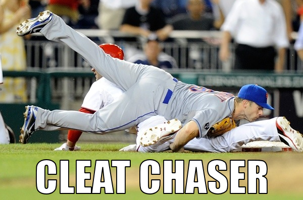

How we perceive ourselves and others.
What is Stereotype Threat?
Stereotype threat refers to the position of being at risk (or thinking you are) of confirming negative stereotypes about some group or category that you belong to. It is a self-fulfilling prophecy of sorts. If you feel it enough, you might come to believe that you actually are no good at something because people like you aren't supposed to be good at it, and, whether intentional or not, you slow down until you stop trying all together.
In Education

I'm most familiar with the idea of stereotype threat in an educational context. One great book that I read when completing my M.Ed. was Delusions of Gender: How Our Minds, Society, and Neurosexism Create Difference, and in it the author talked about a particular experiment where two groups of young girls were given a math test. Before they took the test, one group was told how good girls are at math, and the other group was not. Even when considering the influence of all other variables (such as the positive effects of a pep talk), the group that was told that girls were good at math performed better. It's been a couple of years since I've read it so I might have some details wrong, but the general idea remains. Stereotypes of worth are felt (perhaps not consciously) even among the very young.
Personal Perspective
I experienced stereotype threat as recently as last night. I was at a major league baseball game and happened to be sitting two empty seats from a scout. I found a lot of his discussion with the man next to him (a former player and possibly a scout as well) absolutely fascinating and learned a fair bit about baseball history and technical aspects just listening to them. While I was reluctant to bother him because he was busy taking notes, I was also quite aware of the fact that I might be perceived as a baseball fangirl who just wanted to talk about how cute Bryce Harper is or something. I would say that I know more about baseball than the average fan, but I missed out on learning more because I thought that I might not know enough to avoid the assumption that my theoretical ignorance was due to my gender. Most of my experiences with stereotype threat are gender related.
So What Can We All Do?
While it would be great if the world could change with one snap of your fingers, combating stereotype threat is a not a quick process. I think the place to begin is trying to break down the underlying assumptions. If you hear someone say, for example, that girls are naturally lousy at math, just telling them that they're wrong doesn't really help. When I hear people say such things, even if it's about a group that I'm not a part of, I try to ask them why they think such a thing. This requires people to examine a concept that's become so ingrained that they probably have never given it much thought. You can lead them through a logical progression of questions (“Why do you think that?” “What do you think might cause that?” “Have you heard of (insert factor) that affects why that is?”) to the hopeful end result of their understanding the invalidity of their assumption without causing them to shut down. It doesn't always work, but it creates an atmosphere of open and honest dialogue that is more likely to change minds than hostility.